Daftar Perusahaan, Sejarah VOC, Kota Prasejarah, Tempat Angker, Jalan Angker, dan Sekolah Terkenal
Daftar Perusahaan Besar di Indonesia
Profil singkat entitas ekonomi terkemuka di Nusantara
1. PT Bank Rakyat Indonesia (Persero) Tbk.
Bidang: Perbankan dan Keuangan
Bank yang berfokus pada pemberdayaan UMKM ini merupakan salah satu bank dengan jaringan terluas di Indonesia.
Video Profil
2. PT Pertamina (Persero)
Bidang: Minyak, Gas, dan Energi
Perusahaan energi milik negara yang mengelola hulu hingga hilir sektor minyak dan gas di Indonesia.
Video Profil
3. PT Telkom Indonesia (Persero) Tbk.
Bidang: Telekomunikasi dan Digital
Perusahaan telekomunikasi digital terbesar di Indonesia yang menyediakan layanan internet, telepon, dan data.
Video Profil
4. PT Astra International Tbk.
Bidang: Otomotif, Jasa Keuangan, dan Alat Berat
Konglomerasi besar di Indonesia yang memegang peran vital dalam industri otomotif dan infrastruktur nasional.
Video Profil
Ringkasan Tabel Perusahaan
Nama Perusahaan
Sektor
Status
BRI
Perbankan
BUMN
Pertamina
Energi
BUMN
Telkom
Telekomunikasi
BUMN
Astra
Multisektor
Swasta
Sejarah VOC di Indonesia 1602 - 1799
1. Latar Belakang Berdirinya VOC
VOC (Vereenigde Oostindische Compagnie) atau Persekutuan Dagang Hindia Timur didirikan pada 20 Maret 1602 di Amsterdam, Belanda.
Tujuannya adalah menggabungkan perusahaan-perusahaan dagang Belanda agar tidak saling bersaing di Asia dan bisa memonopoli perdagangan rempah-rempah.
Sebelum VOC, pedagang Belanda datang sendiri-sendiri ke Nusantara sejak 1596 dipimpin Cornelis de Houtman.
Karena sering bentrok, akhirnya pemerintah Belanda menyatukan mereka jadi VOC lewat piagam Oktroi.
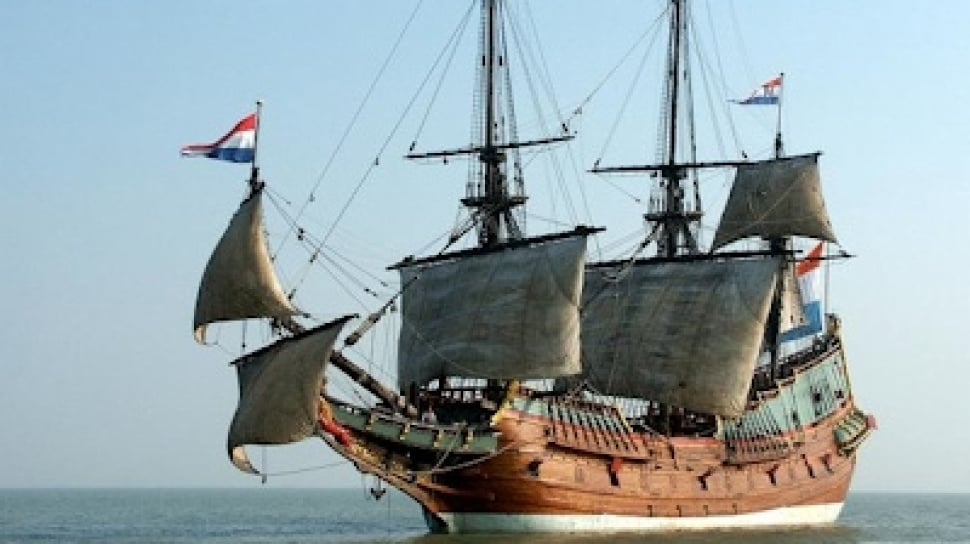
Gambar: Replika Kapal VOC Batavia. Sumber: Wikimedia Commons
2. Kedatangan VOC ke Nusantara
VOC pertama kali mendarat di Banten tahun 1602. Tahun 1610 VOC mendirikan pos dagang di Jayakarta.
Di bawah Gubernur Jenderal Jan Pieterszoon Coen, Jayakarta direbut tahun 1619, dibakar, lalu dibangun ulang jadi kota Batavia sebagai pusat VOC di Asia.
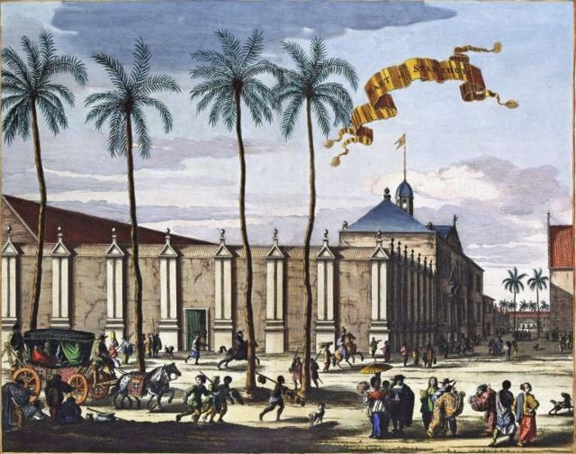
Gambar: Kastel Batavia, pusat pemerintahan VOC. Sumber: Tropenmuseum
3. Monopoli & Kebijakan VOC
Hak Oktroi: VOC boleh punya tentara, menyatakan perang, mencetak uang, dan mengadakan perjanjian dengan raja-raja lokal.
Hongi Tochten: Pelayaran patroli untuk memusnahkan tanaman rempah rakyat Maluku agar harga tetap tinggi.
Contingenten: Rakyat wajib menyerahkan hasil bumi ke VOC.
Verplichte Leverantie: Wajib jual hasil bumi hanya ke VOC dengan harga murah.
Ekstirpasi: Penebangan pohon pala & cengkeh milik rakyat yang melebihi kuota VOC.
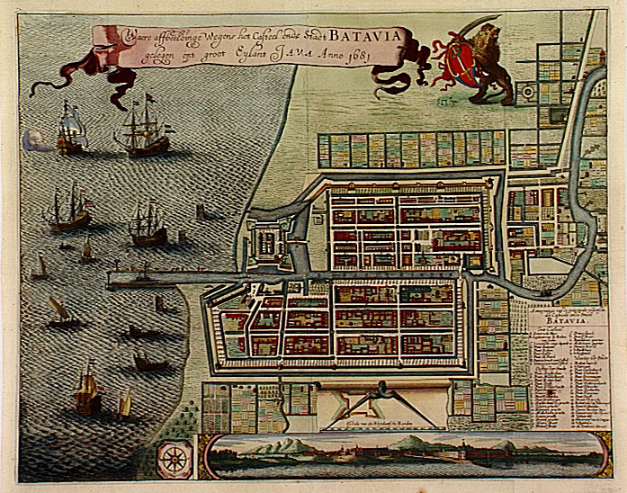
Gambar: Peta wilayah kekuasaan VOC di Nusantara tahun 1718. Sumber: Wikimedia Commons
4. Perlawanan Rakyat Indonesia
Monopoli VOC memicu banyak perlawanan, di antaranya:
Perlawanan Sultan Agung Mataram 1628 & 1629 - Menyerang Batavia tapi gagal.
Perlawanan Sultan Hasanuddin Makassar 1666-1669 - Melawan monopoli VOC di Indonesia Timur.
Perlawanan Sultan Ageng Tirtayasa Banten 1651-1683 - Menolak monopoli lada.
Perlawanan Pattimura di Maluku 1817 - Meski VOC sudah bubar, ini akibat dendam dari zaman Hongi Tochten.
5. Keruntuhan VOC
VOC resmi dibubarkan pada 31 Desember 1799 karena:
Korupsi: Pegawai VOC banyak korupsi. Istilahnya "Vergaan Onder Corruptie" = Hancur Karena Korupsi.
Hutang: Perang terus-menerus bikin VOC bangkrut, hutang 134 juta gulden.
Kalah saing: Kalah dengan EIC Inggris.
Manajemen buruk: Wilayah terlalu luas, susah dikontrol dari Belanda.
Setelah bubar, semua hutang & aset VOC diambil alih Pemerintah Belanda. Inilah awal Pemerintahan Hindia Belanda.
6. Video Dokumenter Sejarah VOC
Berikut video penjelasan sejarah VOC di Indonesia:
Video: Sejarah VOC - Asal Usul Penjajahan Belanda. Sumber: YouTube
Video: Kenapa VOC Bisa Bangkrut? Sumber: YouTube
7. Peninggalan VOC di Indonesia
1. Kota Tua Jakarta
Bekas pusat Batavia, ada Museum Fatahillah bekas Stadhuis VOC
Dibangun Daendels 1808, tapi fondasinya dari jalan pos VOC
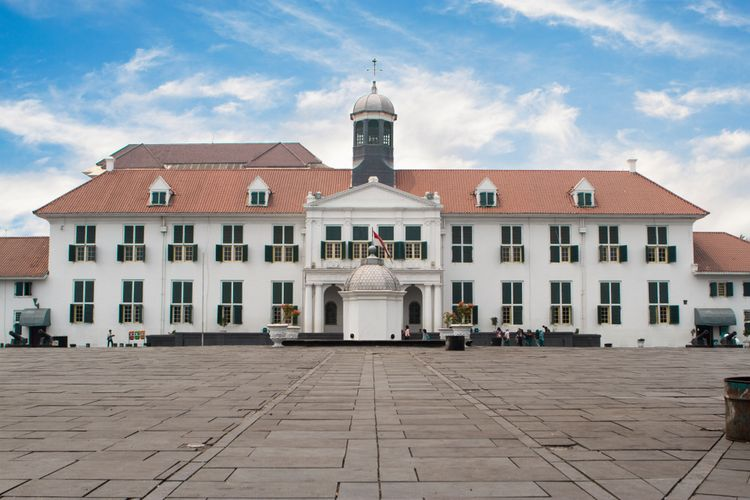
Gambar: Museum Fatahillah, bekas Stadhuis VOC di Kota Tua Jakarta. Sumber: Wikimedia Commons
Kota Prasejarah di Indonesia
Indonesia memiliki banyak situs arkeologi dan kota prasejarah yang menjadi saksi sejarah panjang peradaban manusia di wilayah Nusantara.
1. Situs Sangiran
Situs Sangiran merupakan salah satu situs manusia purba paling penting di dunia yang terletak di Jawa Tengah. Situs ini menyimpan fosil Homo erectus dan berbagai artefak penting.
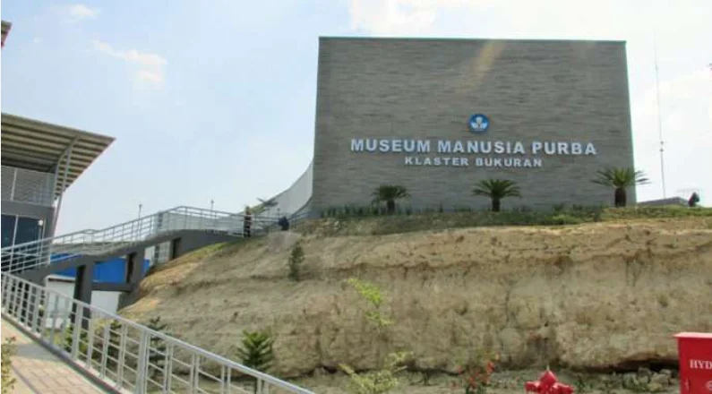
Museum dan situs arkeologi Sangiran, Jawa Tengah.
Video Dokumenter Situs Sangiran
2. Situs Gunung Padang
Gunung Padang adalah situs megalitik terbesar di Indonesia yang terletak di Cianjur, Jawa Barat. Situs ini dipercaya sebagai peninggalan manusia prasejarah dengan struktur batu yang kompleks.
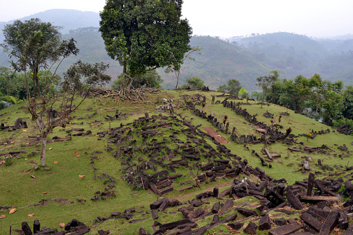
Situs megalitik Gunung Padang di Jawa Barat.
Video Dokumenter Situs Gunung Padang
3. Situs Leang-Leang
Situs Leang-Leang di Sulawesi Selatan terkenal dengan lukisan gua prasejarah yang berumur ribuan tahun, yang menunjukkan kehidupan manusia purba di wilayah tersebut.
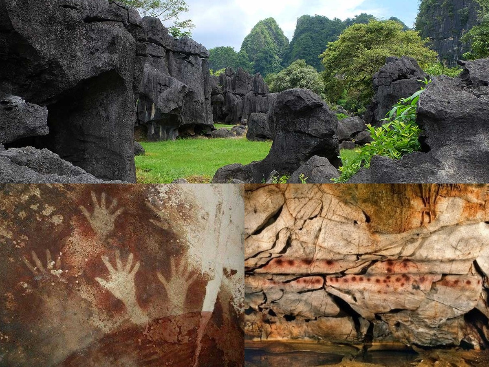
Lukisan gua di Situs Leang-Leang, Sulawesi Selatan.
Video Dokumenter Situs Leang-Leang
4. Situs Kota Cina di Luwu
Situs Kota Cina adalah pemukiman kuno di Luwu, Sulawesi Selatan, yang menunjukkan adanya aktivitas perdagangan dan peradaban awal di wilayah tersebut.
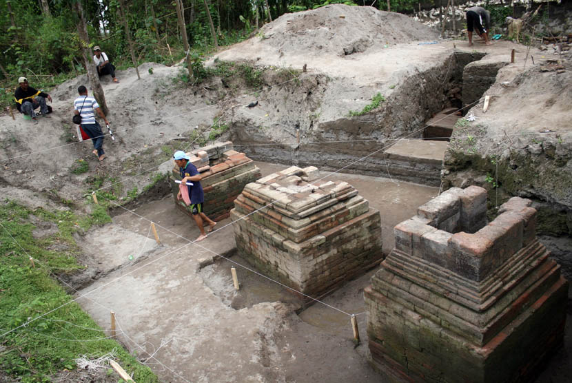
Bekas pemukiman kuno Situs Kota Cina di Luwu.
Video Dokumenter Situs Kota Cina
5. Situs Liang Bua
Situs Liang Bua di Flores adalah tempat ditemukannya fosil Homo floresiensis, manusia purba yang dikenal dengan julukan "The Hobbit". Situs ini sangat penting dalam studi evolusi manusia.
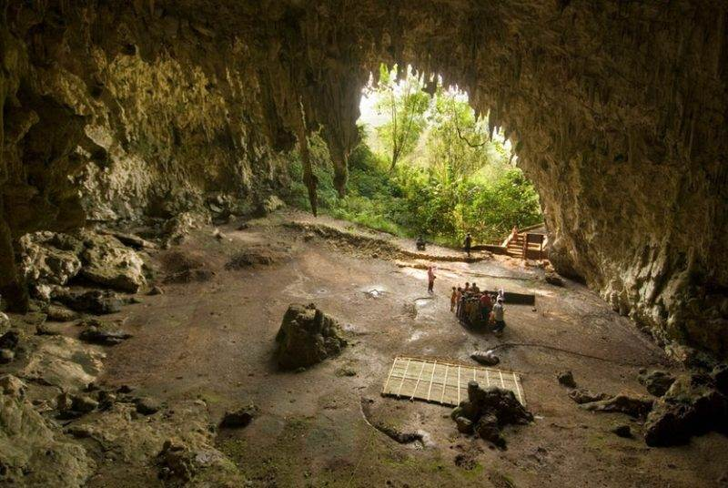
Gua Liang Bua di Flores, tempat penemuan Homo floresiensis.
Video Dokumenter Situs Liang Bua
Kota-Kota Angker di Indonesia
Indonesia memiliki banyak cerita rakyat dan legenda tentang tempat-tempat yang dianggap angker. Berikut adalah beberapa di antaranya:
1. Jakarta (Kota Tua)
Kawasan Kota Tua Jakarta sering dikaitkan dengan berbagai penampakan dan cerita mistis. Bangunan-bangunan tua peninggalan Belanda menjadi saksi bisu berbagai peristiwa sejarah, dan konon dihuni oleh arwah masa lalu. Cerita tentang "Si Manis Jembatan Ancol" adalah salah satu legenda yang populer dari daerah ini.
2. Bandung (Gedung Sate)
Gedung Sate, salah satu ikon Kota Bandung, juga kerap disebut memiliki aura angker. Konon, arwah para pekerja yang meninggal saat pembangunan gedung ini masih menghantui. Cerita tentang penampakan noni Belanda atau sosok-sosok lain sering terdengar.
Benteng Vredeburg, sebuah benteng peninggalan Belanda, dikabarkan menjadi tempat berbagai penampakan, terutama terkait peristiwa sejarah kelam di masa lalu. Selain itu, Monumen Jogja Kembali juga sering disebut memiliki kisah mistis.
4. Semarang (Lawang Sewu)
Lawang Sewu, yang berarti "Seribu Pintu" dalam bahasa Jawa, adalah bangunan bersejarah peninggalan Belanda yang sangat terkenal dengan cerita angkernya. Bangunan ini sering dikaitkan dengan berbagai penampakan, termasuk kuntilanak dan arwah tentara Jepang yang tewas di sana.
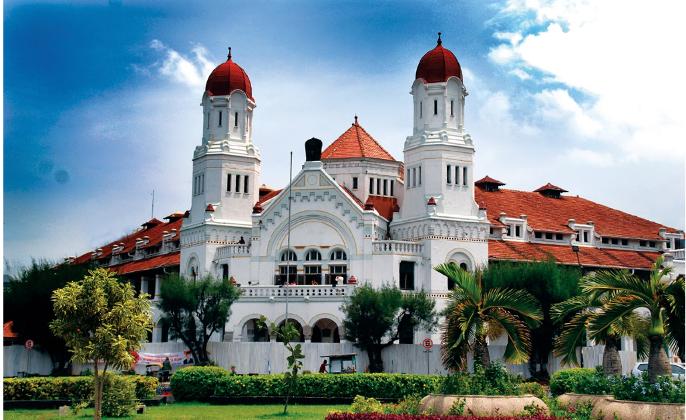
5. Purbalingga (Rumah Sakit Lama)
Di Purbalingga, Jawa Tengah, terdapat sebuah rumah sakit tua yang sudah tidak beroperasi dan kini menjadi tempat angker. Bangunan ini konon dihuni oleh berbagai entitas gaib dan sering menjadi lokasi uji nyali bagi para pencari sensasi.
6. Bali (Puri Anom)
Di Bali, ada banyak tempat yang memiliki nuansa mistis. Salah satu yang sering disebut adalah Puri Anom di Tabanan. Konon, tempat ini adalah bekas kerajaan yang memiliki sejarah kelam dan sering dikaitkan dengan keberadaan makhluk gaib.
Catatan: Cerita tentang tempat angker bersifat legenda dan cerita rakyat. Informasi yang disajikan di sini adalah berdasarkan narasi populer dan tidak bermaksud untuk menakut-nakuti.
Jalan yang Angker di Indonesia
Indonesia memiliki banyak jalan yang dikenal angker karena cerita mistis, suasana sepi, dan sering dikaitkan
dengan kejadian-kejadian aneh. Beberapa jalan ini bahkan terkenal di masyarakat luas dan sering dibahas
melalui video dokumenter maupun cerita horor.
1. Alas Roban
Alas Roban terletak di Kabupaten Batang, Jawa Tengah. Jalan ini dikenal sebagai salah satu jalan paling
angker di Indonesia karena suasananya yang gelap, sepi, dan banyak cerita mistis dari pengguna jalan.
2. Terowongan Casablanca
Terowongan Casablanca di Jakarta juga sering disebut angker. Banyak cerita yang mengaitkannya dengan
lokasi pemakaman dan penampakan yang pernah dilaporkan oleh masyarakat.
3. Tol Cipularang
Tol Cipularang dikenal memiliki banyak cerita mistis. Jalan tol ini sering disebut angker karena
kecelakaan yang kerap terjadi serta kisah-kisah penampakan yang beredar di masyarakat.
4. Cadas Pangeran
Cadas Pangeran adalah jalur pegunungan di Jawa Barat yang terkenal curam, berkelok, dan angker.
Jalan ini sering dikaitkan dengan cerita seram karena medannya yang ekstrem.
5. Tol Cipali
Tol Cipali juga dikenal sebagai salah satu jalan angker di Indonesia. Jalan ini sering menjadi bahan
pembahasan karena banyak cerita mistis dan peristiwa aneh yang dikaitkan dengan ruas jalannya.
Foto Jalan Angker
Video Jalan Angker di Indonesia
Kesimpulan
Jalan-jalan yang dianggap angker di Indonesia umumnya memiliki suasana sepi, gelap, dan penuh cerita
mistis. Walaupun begitu, cerita tersebut lebih banyak berasal dari kepercayaan masyarakat dan pengalaman
yang beredar dari mulut ke mulut.
Daftar Sekolah di Indonesia
Daftar ini berisi sekolah tingkat SD, SMP, SMA, SMK, dan Universitas terbaik di Indonesia beserta foto dan video profilnya.
1. Tingkat Sekolah Dasar (SD)
SDN Menteng 01 Jakarta
Salah satu SD negeri terbaik di Jakarta. Pernah jadi sekolah Barack Obama tahun 1967-1971.
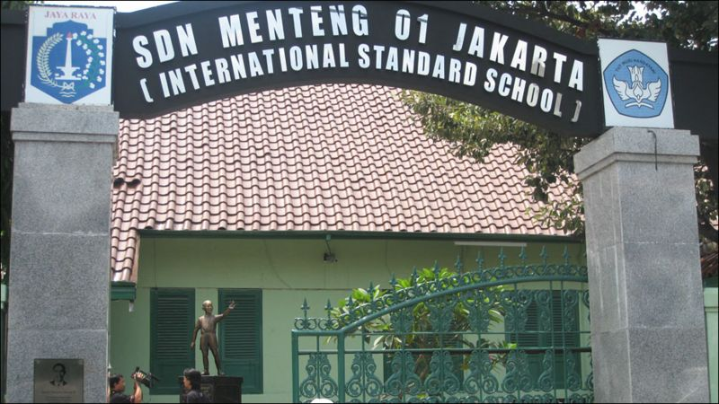
Gambar: Gedung SDN Menteng 01 Jakarta. Sumber: Wikimedia Commons
SD Islam Al Azhar
Jaringan SD Islam swasta terbesar di Indonesia, pusat di Kebayoran Baru Jakarta.

.webp)

.webp)

.webp)
.webp)